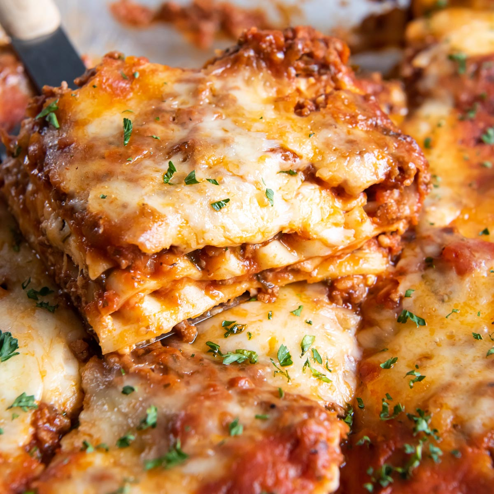

|  | 1. Heat the oven to 400ºF. Arrange a rack in the middle of the oven and heat the oven to 400°F. |
Ingredients |
| 2. Brown the beef and onion. Finely chop 1 medium yellow onion. Heat 1 tablespoon olive oil in a 12-inch or larger regular or cast iron skillet over medium-high heat until shimmering. Add the onion, 1 pound lean ground beef, 1/2 teaspoon kosher salt, and 1/4 teaspoon freshly ground black pepper, and cook, breaking the beef up into small pieces with a wooden spoon, until the beef is cooked through, 6 to 8 minutes. Remove from the heat and let cool for 5 minutes. | ||
| 3. Prepare the baking dish and assemble the meat sauce. Open 1 (24 to 25-ounce) jar marinara sauce (3 cups). Spread a thin layer of the sauce in the bottom of a 9x13-inch baking dish. Stir the remaining sauce into the ground beef mixture. | ||
| 4. Begin layering the lasagna. Shred 12 ounces low-moisture mozzarella cheese if needed (3 cups). Place 5 lasagna noodles in the baking dish, breaking them if needed to create a single layer (it’s OK if the noodles overlap slightly). Dollop and spread 1 cup of the ricotta cheese over the noodles. Dollop and spread about 1 1/2 cups of the meat sauce on the ricotta, then sprinkle with 1 cup of the mozzarella. | ||
| 5. Continue layering the lasagna. Arrange 5 more noodles over the mozzarella, followed by 1 cup of the ricotta cheese, 1 1/2 cups of the meat sauce, and 1 cup of the mozzarella. Top with a final layer of 5 noodles and the remaining sauce, spreading the sauce thin so that it almost completely covers the noodles. (Reserve the remaining 1 cup mozzarella for the end of baking.) Cover the dish tightly with aluminum foil. | ||
| 6. Bake the lasagna for 1 hour. Bake for 1 hour. Check to make sure the noodles are done by poking the lasagna with a knife; the knife should slide easily through all the layers. If it doesn't, cover and cook for 15 minutes more. | ||
| 7. Sprinkle with the remaining mozzarella and finish baking. Uncover the lasagna and sprinkle with the remaining 1 cup mozzarella. Bake uncovered until the mozzarella is melted and lightly browned, and the sauce is bubbling, 8 to 10 minutes more. | ||
| 8. Cool the lasagna for 15 minutes. Let the lasagna cool on a wire rack for at least 15 minutes before serving. |
| Kcal | Fat | Saturates | Carbs | Sugars | Fibers | Protein | Salt |
|---|---|---|---|---|---|---|---|
| 4g | 5g | 2g | 3g | 4g | 5g | 5g | 3g |
Lasagna is a type of pasta, possibly one of the oldest types, made of very wide, flat sheets. Either term can also refer to an Italian dish made of stacked layers of lasagna alternating with fillings such as ragù, béchamel sauce, vegetables, cheeses, and seasonings and spices.